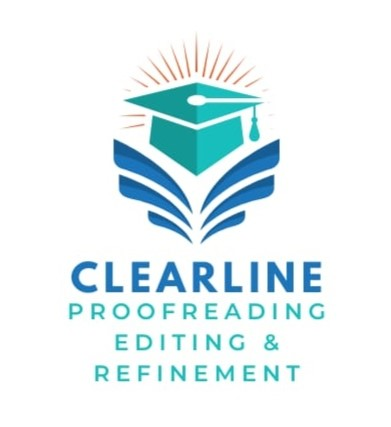

Clarity, precision, and academic integrity.
Clearline provides professional proofreading, editing, and refinement services for tertiary students. We work carefully with your academic writing to improve clarity, structure, grammar, and flow, while preserving your original meaning and voice.
Clearline adheres strictly to academic integrity standards. All work is edited ethically, without altering the intellectual content, argument, or authorship of the original writing.
You are welcome to make contact with confidence. Clearline understands the pressures of academic study and approaches every document with care, respect, and confidentiality.